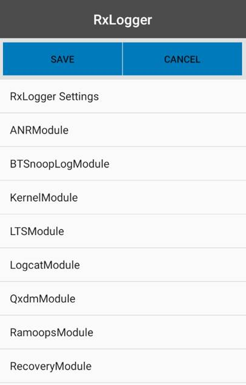

Overview
RxLogger settings are configured through the RxLogger user interface or by pushing a configuration file to the device. All settings are stored in a single .json file that can be exported and mass-deployed to devices across an enterprise.
Secure Mode
Secure Mode enhances the security of Rxlogger by restricting external access of RxLogger logs, reducing the risk of misuse of potentially sensitive data. It also offers a secure method to broadcast intents, ensuring that only trusted users have access, and establishes a safeguarded environment for the deployment of the configuration file to adjust RxLogger settings.
Secure Mode is enabled/disabled exclusively through Zebra OEMConfig, which can be configured using an Enterprise Mobility Management (EMM) system. To enable/disable Secure Mode, see Control Secure Logging in the OEMConfig documentation.
When secure mode is activated, RxLogger-Secure is displayed as the title in the RxLogger main screen.
Requirements
Requirements for Secure Mode are:
- Android 11 or higher
- OEMConfig v11.5.0.1 or higher
- Minimum RxLogger versions based on platform (see Zebra Platform Devices list):
- SD660: v7.0.4.11
- SM6375: v7.75.4.26
- QC6490: v7.0.5.17
Logs
Logs collected from Secure Mode are stored in a separate location than the original log path.
| Name | Folder Path | Folder Path Representation |
|---|---|---|
| Log Path | <RxLogger_Path> | <RxLogger_Path> represents one of the following: • Internal storage path: /sdcard/RxLogger/ • External storage path: /storage/<UUID>/RxLogger/ (where <UUID> is the device's unique identifier) |
| Secure Log Path | <Secure_RxLogger_Path> | <Secure_RxLogger_Path> represents one of the following: • Internal storage path: /sdcard/Android/data/com.symbol.rxlogger/RxLogger/secure/log_data/ • External storage path: /storage/<UUID>/Android/data/com.symbol.rxlogger/RxLogger/secure/log_data/ (where <UUID> is the device's unique identifier) Note: For logs to be captured in Secure Mode, external storage sdcard must be encrypted through Encryption Manager from MX. Otherwise, the log path defaults to the internal storage path. |
For information regarding the specific log path where secure logs are stored for each module, see the corresopnding RxLogger Module.
Backup
In Secure Mode, the backup of the RxLogger folder is password-protected.
- For backup from the RxLogger main screen, see Secure Backup
- For backup from the RxLogger Utility, see Secure Backup.
Deployment
In Secure Mode, tokens are required to authenticate the user before deploying the configuration file. Without broadcasting the custom intent during deployment, the deployment will fail. Broadcast this intent through your app:
com.symbol.rxlogger.intent.action.DEPLOY_CONFIG -e “token” “<token-id>”
Key for Token: “token”
Key for Password: “password”
Delegation scope: delegation-zebra-com.symbol.secure-rxlogger
NOTE: Any third-party app attempting to start RxLogger via intent must send a "token" as an extra. The "token" is requested from the Zebra Device Manager with the delelagtion scope. See Using Delegation Scopes.
If deploying the configuration file via ADB, token validation is not needed. However, the custom intent still needs to be broadcasted before deployment. If not broadcasted, the configuration file is not processed and new settings are not applied. ADB shell-specific intents can only be triggered by the shell. Broadcast this intent through ADB shell:
com.symbol.rxlogger.intent.action.DEPLOY_CONFIG_SHELL
APIs
Special APIs are available to enable RxLogger in Secure Mode with the use of tokens for authentication. See APIs.
Settings GUI
To configure general log settings through the GUI:
- Tap the Settings button to display a list of configurable modules currently loaded by
diagdaemon:
- Tap RxLogger Settings to display a list of general configurations.

- Enable/disable the desired settings:
• Enable notifications - If enabled, RxLogger icon is seen in the notification bar when running. This is helpful to determine whether RxLogger is running in the background. By default, this option is enabled.
• Enable debug logs - If enabled, the debug logs from RxLogger and Diagdaemon are collected in the location specified in the Settings File section. After enabling/disabling debug logs, tap the back button, tap Save and then reboot the device for the change to take into effect. By default, this option is disabled.
• Enable internal sdcard only - If enabled, logs are saved to the internal SD card even when an external SD card is inserted into the device. By default, logs are saved tot he external SD card if present.

To configure module settings through the GUI:
- Tap the Settings button to display a list of configurable modules currently loaded by
diagdaemon:
- Tap the module to be edited to display a list of its parameters:
- Edit settings as required. Tap the BACK button when done.

- Repeat Steps 2 and 3 until all modules are edited as desired.
- On the modules listing screen, tap SAVE to preserve all changes.
See the Modules page for settings information.
Settings Data Types
Supported data types:
Integer - used to store numerical data such as the number of files to store. Allowable integers range from 0 - 2,147,483,647 (max int). For fields such as file size that do not allow a value of 0, a 1 is substituted at runtime. For integer fields, the UI accepts only numerical input.
String - used to store text such as file names and storage paths. The UI accepts any alphanumeric input and symbols as permitted by the file system.
Boolean - used to store true/false information such as to enable/disable a module; represented in the UI as a checkbox.
List - used to select one value from a list of pre-assigned values; represented in the UI as a group of radio buttons.
Settings File
All RxLogger settings are stored in a file on the device, permitting remote configuration and mass deployment of these files using an enterprise mobile management (EMM) system. When a new settings file is pushed to the device, RxLogger restarts all affected modules and applies the new settings immediately.
File name -
config.json:
1. Zebra recommends using the same config.json file across devices with the same Android platform version. Use of the same file across multiple Android platform versions may lead to unexpected behavior.
2. A config.json file from a WWAN device cannot be used interchangeably on a WLAN device, and vice versa. WWAN related modules, such as qxdm, are not available on WLAN and can result to unexpected behavior.Internal storage folder:
/sdcard/RxLoggerExternal storage folder:
/storage/sdcard1/RxLogger
Important: Zebra recommends modifying RxLogger settings only through the RxLogger UI, otherwise unexpected behavior can occur if modified manually.
Related Links
- RxLogger Modules - Explains data collection module parameters and settings
- Intent APIs - Used to start and stop RxLogger and back up all data
- RxLogger Utility - View RxLogger logs in realtime